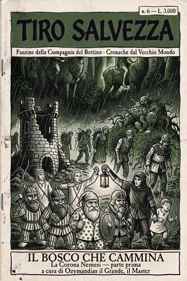

Tiro Salvezza · numero VI
Il bosco che cammina
Numero sei della fanzine della Compagnia del Bottino, primo della «Corona nemesi»: una commissione nanica, una torre di guardia senza guardie e un bosco che non sta fermo. Si parte per una gita a pagamento; si torna con qualche fossa in più.
- ≈ 43 min di lettura
- Ozymandias il Grande
- dalle partite a D&D 5ª ed.
- anche in EPUB, 1,0 MB
Editoriale — numero sei
TIRO SALVEZZA — fanzine della Compagnia del Bottino · rubrica «Cronache dal Vecchio Mondo»
Nel numero scorso vi avevo salutato scrivendo che i log si fermavano lì, e che la campagna no. Avevo ragione a metà, che per un Master è già una media eccellente: la campagna è andata avanti, e i log, dopo una lunga pausa, sono ricominciati. Ve ne porto il primo pezzo.
È una cerca nuova, e porta un titolo che i lettori attenti terranno a mente: «La corona nemesi». Vi avverto subito che in questo numero la corona non si vede. Si vede, in compenso, molta strada: una commissione del vecchio Alrik Kiomarossa, un viaggio in traghetto a vapore, una stazione di posta dove qualcuno trova una camera più comoda delle altre, e una torre di guardia dell’Impero in cui non c’è più nessuno di guardia. Si vede anche un bosco. Guardatelo bene, quel bosco. Ha l’aria di stare fermo.
È anche il numero delle facce nuove. La Compagnia del Bottino, lo sapete, è un locale a porte girevoli: si entra, si esce, qualcuno esce in modo definitivo. Stavolta ne entrano tanti, maghi che giocano col fuoco, elfi che cantano, nani che dormono in pigiama, e un cacciatore di mostri con una spada che nessuno riesce a sollevare. Due veterane, invece, restano a Talabheim a spendere. Fanno bene.
Si ride, come sempre. C’è una scala a chiocciola che fa cantare chi la sale, un archibugio che fa piff, un albero che non gradisce gli scalatori. E poi c’è la notte, che in questo numero arriva due volte. Non vi dico altro: un editoriale serio non anticipa, e io, quando serve, so essere serio.
— Ozymandias il Grande, il Master
Sommario
- Il bosco che cammina (6ª cerca — «La corona nemesi», parte prima) — Una commissione nanica verso le colline ululanti, una torre di guardia abbandonata in mezzo a un giardino che non dovrebbe esserci, e un assedio notturno di gente che non avrebbe dovuto camminare. La gita a pagamento meno conveniente della storia della Compagnia. (Continua.)
Linea temporale
Dove siamo nella campagna della Compagnia del Bottino. In grassetto ciò che leggerete in questo numero.
- 1ª e 2ª cerca — I pirati del Talabec (n. 1)
- 3ª cerca — La torre di ossa + Il principe delle sabbie — Sylvania (n. 2 e 3)
- 4ª cerca — La diplomazia elfica — verso Ulthuan (n. 4)
- 5ª cerca — L’invasione di Ulthuan — Nagarythe, la terra degli elfi oscuri; la memoria di tutti viene cancellata (n. 5)
- 6ª cerca — Il bosco che cammina — prima parte della «Corona nemesi»: da Talabheim verso le colline ululanti, lungo la via imperiale e il fiume Delb. (Il registro dei morti si allunga; quanto, lo leggerete.)
Fili aperti all’inizio di questo numero: Ardal è tornata fra noi, da un posto che lei non saprebbe indicare sulla mappa; i tre nani di Hotek non sanno ancora che cosa portano addosso; l’invasione di Irae T’Sarran incombe su Ulthuan; Manfred Von Carstein cammina di nuovo nel mondo (solo Ridley lo sa); restano i doni di Tzeentch, i marchi di Ramotis, il museo delle cere di Marienburg e il rito del piromante. E ora, in più, una commissione di Alrik da onorare.
Il bosco che cammina
Cronaca della sesta cerca della Compagnia del Bottino, prima parte della «Corona nemesi». Una commissione nanica, una torre di guardia senza guardie, e un bosco che non stava fermo. A cura di Ozymandias il Grande, il Master.
Dalle sale di Talabheim alla foresta del Drakwald. Il numero in cui si scavano delle fosse.
Prologo — Una gita a pagamento
C’è una legge del mio mestiere che nessun manuale riporta e che ogni Master impara a sue spese: chi parte per una gita pagata torna sempre con meno compagni di quanti ne aveva alla partenza. Non chiedetemi perché. Forse è l’oro, che appesantisce le gambe; forse è il contratto, che fa credere ai miei ragazzi di essere dei professionisti; o forse è soltanto che il Vecchio Mondo, quando vede passare una comitiva che ride, si offende e le manda il conto. So soltanto che funziona così, e che stavolta ha funzionato come un orologio nanico.
Questo è il primo numero di una cerca nuova, e porta un titolo che vi chiedo di tenere a mente: «La corona nemesi». Vi anticipo subito, per correttezza, che di corone, in queste pagine, non ne vedrete nemmeno l’ombra. Ci sono dei nani in pigiama, un albero permaloso, una scala a chiocciola che fa cantare chi la sale, e una gran quantità di gente che dorme dove capita (e con chi capita, ma su questo tornerò). La corona arriverà; le corone arrivano sempre, quando meno servono. Intanto c’è da guadagnarsi la paga.
Due assenze, prima di cominciare, perché i lettori affezionati le noteranno. Ridley ed Endia non partono. Restano a Talabheim a spendere la ricompensa della cerca precedente, con la serietà e la dedizione che i miei ragazzi riservano solo alle cose davvero importanti, cioè le locande. Non ve ne do colpa se le invidiate: chi resta in città, nel mio registro, ha una speranza di vita assai più lunga di chi parte. Lo dico come battuta. Prendetela come tale.
Al loro posto, come sempre in questa compagnia a porte girevoli, facce nuove: elfi che cantano, maghi che giocano col fuoco, un paio di nani che non avevate ancora conosciuto e uno o due tipi che faticherete a ricordare, e non sarà colpa vostra. Tenete a mente le piante. Tutte. Sì, anche quelle che vi sembrano solo piante.
Capitolo primo — Il conto di Talabheim
Tornarono dunque a Talabheim, a cerca finita, e salirono al palazzo per fare rapporto al conte elettore Darian. Il quale, va detto, aveva pagato per sapere com’era fatta la misteriosa isola degli elfi, quali difese avesse, quanti maghi, quante navi; e si trovò davanti una fila di eroi che, interrogati, si guardavano l’un l’altro con la limpida serenità di chi non ricorda assolutamente niente. Gli alti elfi, prima di rimandarli a casa, avevano fatto pulizia nelle loro teste con la stessa cura con cui una buona massaia spolvera le mensole, e dell’avventura era rimasto quel che resta della polvere: niente, e un vago senso di pulito.1
Il conte, che è un uomo di mondo, ne prese atto con un sospiro. I rapporti diplomatici con Ulthuan, dopotutto, erano stati avviati; e avviare è già molto, quando si ha a che fare con gli elfi. Pagò. Pagò bene, anzi, con monete sonanti che i miei ragazzi accolsero come si accoglie un vecchio amico che non si vedeva da un pezzo, e che si affrettarono a salutare di nuovo nel giro di pochi giorni.
Ciascuno, com’è costume, spese secondo la propria natura. Chi gozzovigliò, e furono i più. Chi corse dai mercanti a monetizzare il bottino accumulato, impresa che con questa gente richiede sempre un paio di carri e una notevole elasticità sul concetto di «provenienza». E chi, più saggio o più vanitoso, investì in equipaggiamento. Gionatan — degli orsi, o degli sciacalli, secondo chi glielo chiedeva e secondo l’umore del giorno — si fece forgiare da un armaiolo di prim’ordine una lama elfica di ferro meteorico, e la fece incantare per giunta: una spada bellissima, di quelle che cantano quando le sfoderi, e che lui accarezzava come un bambino accarezza un cucciolo nuovo, ripromettendosi di trovarle un nome all’altezza. Ci stava ancora pensando quando partirono.
Borik Collepiatto, lo spaccaferro, prese invece la strada più nanica che esista per ottenere qualcosa, e cioè l’umiliazione metodica. Per giorni interi strisciò — non trovo altro verbo — ai piedi di Alrik Kiomarossa, il patrono dei nani di Talabheim, per ottenere che il suo forgiarune incidesse qualche runa sulla corazza di gromril e sul martello. Alrik lo lasciò strisciare con evidente soddisfazione: tra nani, l’arte di farsi pregare è una forma di contabilità.
E poi c’era Shava Nahlo, e per Shava fu una settimana storta. Avete presente l’anello che le aveva regalato il suo — come chiamarlo? — il suo moroso, il conte vampiro di cui la nostra ladra si era invaghita in Sylvania con una leggerezza che ancora oggi mi toglie il sonno? Ebbene, l’anello era diventato cremisi. Per via di una sciocchezzuola, a sentir lei: un bagno rilassante, qualche tempo prima, in una vasca piena di sangue. Dove e quando, lei non lo ricorda con precisione; io sì, ma non è questo il momento. Cose che capitano. Incuriosita da quel cambio di colore e ansiosa di scoprire che cosa sapesse fare il gioiello, Shava lo portò da un alchimista di Talabheim. L’alchimista lo guardò, impallidì, lo guardò ancora, e chiamò le guardie.2
L’anello, si scoprì, era un oggetto vietato dalla legge. Venne confiscato sul posto, con tanto di sigillo e di verbale, e portato nella sala proibita del maniero del conte, dove da allora riposa sorvegliato a vista da guardie molto robuste e molto poco disposte a farsi corrompere. Shava ne uscì con le mani vuote e il cuore spezzato; il che, per un’elfa che colleziona teschi altrui, è un’esperienza educativa nuova.
Fu proprio mentre la consolavano, in uno dei locali più raffinati della città — e vi lascio immaginare che cosa significhi «raffinato» quando ci entra la Compagnia del Bottino —, che Borik tirò fuori la proposta. Alrik aveva una commissione. Molti anni prima, la sua vecchia compagnia d’avventura era caduta tutta intera in uno scontro con misteriosi avversari, laggiù nella zona delle colline ululanti; e i suoi averi, armi e ricordi e chissà cos’altro, erano rimasti là, mai recuperati. Alrik li voleva indietro. Pagava, naturalmente. E metteva a disposizione una guida, il nano Thorik, fedele al suo servizio da una vita, che conosceva le strade.
Una gita a pagamento, dunque. Ve l’avevo detto.
Accettarono tutti, con l’entusiasmo dei sazi. Persino Ardal, che era tornata fra noi da un posto che lei non avrebbe saputo indicarvi sulla mappa nemmeno sotto tortura; io sì, ma questa è un’altra storia, e la tengo nel cassetto.
Capitolo secondo — Vapore e dicerie
Si rifornirono per il viaggio con la consueta sobrietà — tre volte le provviste necessarie, metà delle quali liquide — e presero uno dei nuovi traghetti a vapore che da qualche tempo fanno servizio sul fiume Talabec. Il piano, ricostruito da Borik sulle indicazioni di Alrik, era semplice: risalire il fiume fino alla confluenza col suo affluente, il Delb, e da lì imboccare la grande via imperiale che unisce Altdorf a Middenheim, fino all’insediamento di Delberz, dove si sarebbero informati meglio sulla strada per le colline.
La prima parte del viaggio filò liscia, e regalò anzi ai miei ragazzi uno spettacolo che ricordano ancora. Mentre il traghetto sbuffava controcorrente, videro alzarsi in volo il dirigibile del conte Darian: il mezzo nuovo e straordinario che il conte aveva appena acquistato dall’accademia imperiale, un pallone enorme con una gondola sotto, che salì lento sopra gli alberi e si allontanò verso nord per qualche missione di cui nessuno sapeva nulla.3 I nani lo guardarono con sospetto, come guardano tutto ciò che vola e non è un’ascia lanciata; gli elfi lo guardarono con sufficienza, come guardano tutto ciò che non hanno inventato loro. Io lo guardai con l’interesse di chi sa che, nel Vecchio Mondo, quando un conte manda il suo giocattolo più costoso verso nord, è perché a nord sta succedendo qualcosa.
Sbarcati alla fine del tratto fluviale, si fermarono alla stazione di cambio, un posto chiamato il Ritrovo di Benedict, dove si cambiavano i cavalli e si mangiava uno stufato onesto. Tutti dormirono nella sala comune, sulle panche e sulla paglia, com’è giusto per gente in viaggio. Tutti tranne Ardal, alla quale il simpatico gestore del rifugio offrì — con una gentilezza tutta sua — una delle camere doppie. Ardal accettò.
La cena, comunque, fu istruttiva. Grazie all’esperienza di Thorik, che di stazioni di posta ne aveva viste più di quante ne possa contare un nano sobrio, i nostri si inserirono nel tradizionale scambio di notizie con gli altri avventori, e ne tirarono fuori una voce interessante: a Middenheim, la grande città del nord, si stava radunando un’armata. Per una spedizione, si diceva. Allo scopo di recuperare qualcosa — o qualcuno. Ma la cosa era riservata, e dunque, com’è legge di natura per le cose riservate, la conosceva tutta la taverna, e ciascuno ne aveva una versione diversa. Un dirigibile a nord; un’armata a nord. Annotatelo.
Il mattino dopo, quando la comitiva si rimise in marcia, Ardal non ripartì con loro: il Ritrovo di Benedict, a quanto pare, aveva altri pregi oltre allo stufato, e ognuno ha le sue colline ululanti da esplorare. Su consiglio del padrone del rifugio, gli altri attraversarono il fiume sul traghetto di buon mattino, prima che il tempo peggiorasse, e si diressero verso la successiva torre di guardia stradale. Non una stazione di posta, badate: un posto fortificato, con una guarnigione dell’Impero, dove si poteva passare la notte al riparo. Per arrivarci, però, toccò spingere i carri nel fango. La via imperiale — l’arteria principale che attraversa l’Impero, quella che ogni conte elettore giura di mantenere a regola d’arte — era in uno stato pietoso: buche, pozzanghere, cespugli che si allargavano dai margini come se nessuno li tagliasse da mesi. I nani brontolarono contro i costruttori di strade umani, che è il loro modo di dire «buongiorno». Nessuno si chiese come mai una strada così trafficata fosse così poco curata.4
Capitolo terzo — La quercia argentata
Avvistarono la torre nel primo pomeriggio, da lontano. E fu Nico Barbarossa, lo sventratore, a notare per primo le «stranezze», come le chiamò lui con quella sua aria di chi trova strano tutto ciò che non si può prendere a colpi d’ascia.
La torre era crollata in parte: un fianco aperto, i merli sbreccati. A ridosso del muro era cresciuta una quercia argentata, enorme, con la corteccia che luccicava al sole come la cotta di un cavaliere, e i rami così vicini alla pietra da sembrare abbracciarla. Ma la cosa più strana era il prato. Lo spazio intorno a una torre di guardia, l’avrete imparato da qualunque manuale di fortificazioni, si tiene sgombro di vegetazione: niente cespugli, niente alberi, così che i nemici non abbiano riparo e i balestrieri abbiano campo libero. Quello, invece, era un giardino. Un’erba alta e lussureggiante, fiori, arbusti, rampicanti: una vegetazione prospera e sfacciata, cresciuta lì in mezzo come in un orto concimato.
Strano, osservò qualcuno, che nessuno avesse segnalato un simile abbandono su una strada così importante. Strano davvero, convennero gli altri. E proseguirono, perché in questa compagnia una stranezza è un argomento di conversazione, non un motivo per fermarsi.
Si avvicinarono fino a pochi passi dalla porta, una porta rinforzata, solida, chiusa a chiave. Shava Nahlo, che per le serrature ha un debole quasi quanto per i vampiri, si chinò a esaminarla, e la serratura scattò sotto le sue dita con la docilità di un gatto che si fa accarezzare. Mentre lei lavorava, gli altri si erano messi ad ammirare la quercia. Era davvero un albero magnifico. Gionatan allungò una mano verso la corteccia argentata, per sentire se fosse fredda come sembrava; ma fu battuto sul tempo.
Shava entrò nella torre, e con lei Garlin, la druida elfa, la sola della comitiva che parlasse agli alberi con il rispetto dovuto. Fuori, invece, Elrin — una guerriera elfa dalle braccia robuste e dall’equilibrio invidiabile — decise che da un albero così alto si doveva godere una vista splendida, e cominciò ad arrampicarsi. Lo fece con le sue nerborute manine da guerriera, piantando gli stivali nella corteccia e tirandosi su per i rami come se fossero i pioli di una scala.
L’albero non la prese bene.
Lo dico con tutta la delicatezza possibile: la quercia argentata si scrollò. Come un cane che esce dall’acqua. Ed Elrin, che in quel momento si trovava a metà del tronco, partì per un volo lungo e istruttivo sopra il prato, atterrando con poca grazia in mezzo ai cespugli. Poi i rami si mossero. Le radici si sollevarono dal terreno con uno scricchiolio di legno vivo. E la quercia, che fino a un attimo prima faceva la quercia, si girò verso la comitiva e attaccò.
Il primo ad affrontare la «perniciosa stirpe arborea», come la chiamò poi uno dei miei elfi con il gusto per le parole difficili, fu Karter, il capo del momento, che sguainò il suo spadone con piglio risoluto. Ma evidentemente non era concentrato, perché un ramo lo prese in pieno petto e lo spedì anche lui a svolazzare per la campagna, a qualche passo di distanza dal punto in cui stava ancora rotolando Elrin. Gli altri attaccarono. Le frecce di Loran, il ranger, andarono tutte a segno, ma si piantarono nel legno con la stessa efficacia di uno stuzzicadenti in un ceppo; le asce dei nani scheggiarono, i colpi rimbalzarono. Fu solo con la magia che la creatura cadde: i maghi della comitiva le scatenarono addosso il fuoco, e la quercia, dopo un ultimo ondeggiare, crollò in fiamme sul prato.5
E qui permettetemi di presentarvi Charizard, mago elfo, ultimo arrivato e, a giudicare dal nome, scelto apposta per farmi dannare. Le fiamme sulla quercia caduta stavano già divampando, minacciando di propagarsi all’erba alta e magari alla torre, e Charizard intervenne per spegnerle. Lo fece con la mano sinistra, da cui sgorgò un getto di gelo. Poi si accorse che con la destra poteva fare il fuoco. E con la sinistra il ghiaccio. E con la destra il fuoco. E rimase lì, ipnotizzato dalle proprie mani, a sparare alternativamente fiamme e brina sul legno morto, canticchiando tra sé con aria beata: «Freddo, caldo, freddo, caldo…».
(Lo lasciai fare. Era il tipo di cosa che, in questa compagnia, passa per meditazione.)
Mentre l’albero bruciava sommessamente e Charizard proseguiva i suoi esercizi di termodinamica, il resto del gruppo entrò nella torre, preceduto da Shava e Garlin, che avevano già cominciato a salire. Al primo piano trovarono la camerata delle guardie: le brande rovesciate, i bauli aperti, le coperte per terra, gli sgabelli rotti. Tutto ribaltato, tutto in disordine, come se una mano gigantesca avesse scosso la stanza.
Ma nessun corpo. Nemmeno uno. E, cosa che Garlin notò per prima e che le fece corrugare la fronte, nemmeno una goccia di sangue. Una guarnigione intera dell’Impero era sparita da una torre di guardia senza lasciare dietro di sé un graffio, una macchia, un lamento.
Le due ragazze si guardarono. Poi, da professioniste quali erano, decisero che la questione si sarebbe chiarita salendo, e salirono.
Capitolo quarto — La scala a chiocciola
La torre aveva una scala a chiocciola di pietra, stretta come la gola di un nano davanti al conto, che saliva dal pianterreno fino in cima girando attorno a un pilastro centrale. Lungo la ringhiera e su per le pareti correva un’edera fitta e verdissima, di quelle che fanno tanto castello antico nelle stampe. Nessuno ci fece caso. È questo il bello delle piante: nessuno ci fa mai caso.
Shava e Garlin, intanto, avevano raggiunto il secondo piano. Gli altri le seguivano a distanza — Karter, Loran, Elrin e Nephtunos, un mago di cui vi dirò poco perché poco ebbe il tempo di fare — e, prima di salire, uno dei maghi della comitiva ebbe l’idea brillante di rendere invisibili Elrin e Karter, perché potessero muoversi non visti in caso di sorprese. I due, per non perdersi, si legarono in vita con una corda. Il che produsse, sulla scala a chiocciola, uno spettacolo che vorrei poter disegnare: una corda fluttuante a mezz’aria, con due cappi alle estremità, che saliva dondolando i gradini da sola, tirandosi dietro due sbuffi d’aria e qualche imprecazione.
Di sopra, le ragazze lavoravano da professioniste. Ispezionarono la sala comune del secondo piano con passo leggero e dita veloci, e ne ricavarono qualcosa: un paio di pistole a polvere nera e due corni di polvere da sparo, abbandonati come il resto. Sotto di loro, invece, si lavorava da dilettanti. Il gruppo della scala avanzava a spintoni, a gomitate, a «scusa» e «spostati», e a ogni spintone qualcuno si appoggiava alla ringhiera, e a ogni appoggio l’edera tremava.
Solo che non era edera.
Era un viticcio, e non di quelli che si potano. Scosso una volta di troppo, sbuffò una nuvola di polline giallo, fine come farina, che avvolse la scala e chi ci stava sopra. Il primo a respirarla fu Loran, il ranger, che si fermò di colpo, sorrise al nulla con un’espressione di beatitudine assoluta e si appoggiò stancamente alla ringhiera erbosa — la quale, ringraziando, cominciò ad avvolgerlo. Loran non protestò. Continuò a sorridere mentre i rampicanti gli salivano sulle braccia, e intonò, con voce intonatissima, una canzone che nessuno conosceva e che consisteva quasi per intero nella parola uimbauè ripetuta all’infinito.
Le grida degli altri arrivarono fino al secondo piano, dove Shava e Garlin si guardarono, dubbiose sul da farsi e soprattutto sulla natura del problema. Sulla scala, nel frattempo, i due invisibili davano il meglio. Riporto testualmente le descrizioni che mi fornirono, perché non saprei migliorarle. Elrin «prende una freccia invisibile con la mano invisibile e cerca di farle la punta a scalpello con un coltello invisibile». Karter «cerca di brandire un mortale spadone invisibile con due mani invisibili su una stretta scala a chiocciola, in mezzo ai suoi soci accatastati, di cui una invisibile». Il risultato, come potete immaginare, fu che la pianta ne uscì quasi illesa, mentre una nuova nuvola di polline stendeva anche Nephtunos, che si unì al coro.6
Garlin, con la prudenza dei druidi, salì a raggiungere Shava e si tolse di mezzo. Karter scavalcò i due cantanti — impresa non da poco, su una scala a chiocciola, con una corda legata in vita e un’elfa invisibile all’altro capo — e tornò di sotto, deciso a far giustizia del viticcio a colpi di spadone. Un paio di forbici, forse, sarebbero state più pratiche. Ma chi sono io per suggerire il giardinaggio a un uomo armato.
A risolvere la faccenda ci pensò, come spesso accade, il fuoco. Charizard, che fuori aveva finito di giocare col legno della quercia, prima di rientrare tentò, insieme a Nurofenus, l’altro mago della compagnia, di rianimare l’albero morto per farne il primo zombi-albero della storia del Vecchio Mondo. Non ci riuscirono. (Mai lasciare due maghi da soli e incustoditi: è la prima cosa che si impara dietro lo schermo, e l’ultima che si smette di imparare.) Allora Charizard entrò nella torre, individuò la radice del viticcio, alla base della scala, e la incenerì. La pianta si seccò in un istante, e i due prigionieri della ringhiera scivolarono a terra con un sospiro di delusione.
Ripulita la scala, salirono anche gli altri: Nico, Zeno il druido e Gionatan raggiunsero il secondo piano, dove aspettavano Shava, Garlin, Karter e un Loran ancora un po’ assente. L’idea era di salire alla terrazza merlata, in cima, mezzo crollata, per dare un’occhiata ai dintorni. Lo sventratore salì i pioli della scaletta con la grazia di uno skaven che ha fretta; Zeno e Gionatan, meno agili e meno pratici di pioli, preferirono aggrapparsi ai rampicanti che penzolavano dall’apertura nel muro, folti e robusti, ottimi per tirarsi su. Gionatan li prese a piene mani.
Erano un altro viticcio. Cresciuto da fuori, lungo la parete, fino alla cima della torre.
La nuvola di polline, stavolta, invase tutto il secondo piano. Shava e Garlin trattennero il fiato in tempo; Loran, evidentemente deciso a proseguire il viaggio interrotto, lo respirò a pieni polmoni; e lo respirarono anche Zeno e Gionatan, che si ritrovarono abbracciati come vecchi compagni di bevute, a cantare allegramente a squarciagola mentre il viticcio, con la stessa allegria, li stringeva sempre più forte. La scena dei due compagni così intimi, e così felici di esserlo, risultò troppo forte per lo stomaco delle ragazze, che si chiesero ad alta voce se valesse davvero la pena salvarli. Fu Karter a deciderlo per tutti: afferrò i due cantanti e li strappò via dai rampicanti a forza, un attimo prima che finissero soffocati. E così eccoli lì, in tre per terra, Loran, Zeno e Gionatan, a cantare stonati e felici. Uno spettacolo pietoso, almeno secondo le ragazze.
Fuori, intanto, Nurofenus aveva trovato la radice del viticcio esterno e l’aveva bruciata con un potente fuoco arcano. La pianta, nell’agonia, liberò un’ultima grossa nube di polline che mandò nel mondo dei sogni lo stesso Nurofenus e un certo Thanosh, che passava di lì e che da quel momento ricorderò soprattutto per questo. Li rimise in piedi il paladino Pietrino, servo di Morr, con una preghiera e una mano sulla fronte: si svegliarono guariti, ma con un mal di testa da sbornia che non auguro a nessuno. (Da quel giorno, al tavolo, Pietrino divenne «Papi». C’era anche l’alternativa «Pippa», ma suonava peggio.)
Capitolo quinto — Turni di guardia
Quando il gruppo ebbe rimesso insieme i cocci dei suoi elementi più scalcinati, il sole era al tramonto. Il trio nanesco — Nico, Borik e Thorik — provvide al fuoco, e lo fece con la praticità della sua razza: spaccò in ciocchi da camino quel che restava dell’albero bruciato. Cenarono. Impastoiarono i cavalli sul prato. E poi cominciò la parte più pericolosa della giornata, cioè l’assegnazione delle brande.
Le brande, nella camerata della guarnigione scomparsa, erano poche, e la compagnia era tanta. Le ragazze non volevano dormire accanto ai maschi, giudicati puzzolenti senza appello; i nani non volevano dormire accanto agli elfi, rei di diffondere nella stanza quel profumino d’arbre magique al mango che, a detta loro, accompagna i rekkiapunta ovunque vadano. Sull’opinione che gli elfi avevano dell’acqua di colonia dei nani, stendo per pudore un velo pietoso.
Meno male che c’era Loran. Il ranger, ormai tornato in sé, ricordò agli sfaticati che fuori c’era un bosco, che il bosco era buio, e che i turni di guardia non sono un optional. Il gruppo si divise in quattro turni, tranne i nani, che preferirono dormire, sostenendo che un nano sveglio di notte è un nano che di giorno non rende.7
Il primo turno filò liscio. Fuori aveva cominciato a piovere, una pioggia fitta e battente che tamburellava sulle pietre e conciliava il sonno, smussando l’attenzione di chi doveva restare sveglio.
Il secondo turno fu più insolito.
Shava era fuori, arco in pugno — l’arco demoniaco, quello con le lame nascoste — e una freccia luminosa incoccata, e girava attorno alla torre per pattugliare. Dentro, alla finestra, stavano Garlin e Karter. E Garlin a un certo punto si irrigidì. Si sentiva profondamente a disagio, e ci mise un poco a capire perché: i rumori della notte erano cessati. Tutti. Niente civette, niente rane, niente fruscii nel sottobosco, niente di niente. Si sentivano soltanto il passo leggero di Shava sull’erba bagnata, là fuori, e il respiro calmo di Karter, lì accanto a lei. Il bosco, che fino a un momento prima respirava come respirano tutti i boschi, aveva trattenuto il fiato.
Garlin uscì ad avvertire Shava. E intanto anche i cavalli, sul prato, cominciarono a dare segni di nervosismo, poi di paura: sbuffavano, tiravano le pastoie, cercavano di allontanarsi verso la strada e verso il fiume. Shava scoccò la sua freccia luminosa in direzione del fiume. La freccia disegnò nel buio un arco di luce bianca e si spense sull’acqua.
Niente. Il fiume, la sponda, la strada. E il silenzio, un silenzio penetrante.
Su suggerimento di Karter, Shava fece il giro della torre e si portò sul lato rivolto alla foresta. Incoccò un’altra freccia luminosa. La scoccò verso il margine degli alberi.
E nel breve bagliore li vide. Molte figure. In piedi al limitare del bosco, una accanto all’altra, sotto la pioggia. Ferme. Orribilmente immobili. A guardare la torre.
Capitolo sesto — I morti verdi
Garlin corse a svegliare gli altri, e gli altri si svegliarono come si sveglia la Compagnia del Bottino: rotolando malamente giù dalle brande, infilandosi gli stivali al contrario, cercando la propria arma nel buio e trovando quella del vicino. Nel caos, spicca nella mia memoria la figura di Borik Collepiatto, che in pigiama si era messo addosso soltanto l’elmo da spaccaferro, e con martello e scudo in pugno si precipitò fuori dietro a un entusiasta Nico Barbarossa. «Finalmente si mena!», gridò giubilante lo sventratore. Era la prima frase sensata che sentivo da lui in tutta la giornata.
Non ci fu il tempo di indossare le armature pesanti. E tuttavia i nostri decisero di uscire, di affrontare i misteriosi avversari in campo aperto invece di asserragliarsi nella torre, perché l’avventuriero medio, si sa, fa i piani ma non i piani B, e il piano A, in genere, è «andiamo a vedere». Le figure avanzavano. Erano decine, decine e decine, e si muovevano lente verso la torre sotto la pioggia. Alcuni del gruppo scoccarono le prime frecce, che andarono a segno: nessun avversario cadde. Che coraggiosi, pensai.
A testimoniare l’impavido cipiglio della compagnia, Nico si lanciò in avanti, seguito da Borik in pigiama a cuori e da Thorik in cuffietta da notte, ed è un’immagine che vorrei fosse ricordata nei poemi dei nani al posto di molte altre.
Lo scontro si frazionò subito in singole battaglie, uno contro molti. I nostri riuscivano a vedere i nemici grazie a una luce magica evocata da Zeno, il quale intanto sfruttava le nubi della tempesta per preparare un incantesimo serio: i fulmini di Ghyran, il vento di giada della vita, da far piovere sui nemici. E nella luce di Zeno i nemici si videro, finalmente, per quello che erano.
Erano umani. O lo erano stati. Barcollavano come i morti che camminano, avevano le movenze sbilenche degli zombi, ma erano vestiti ed equipaggiati come comuni cittadini dell’Impero: contadini, mercanti, viandanti, e qua e là qualcuno con la casacca e l’elmetto delle guardie stradali. La cosa più strana e inquietante, però, era sulla loro schiena: ciascuno portava, all’altezza delle scapole, un grumo vegetale, un groviglio di viticci annodati come un nido, da cui partivano radici sottili che sparivano sotto i vestiti. Non c’era tempo per raffinati studi di botanica. C’era da menare.
Nico fece strame di un gruppetto. Borik e Gionatan, invece, vennero respinti a poco a poco dalla massa degli avversari, che in più di un’occasione riuscirono a gettarli a terra per sopraffarli; e solo a stento, ogni volta, i due si sfilarono dalle grinfie mostruose. Anche Cratos, l’altro sventratore, sì, quello con la cresta arancione, era in difficoltà. Pietrino, invece, ululò al suo dio una preghiera feroce, e la sua arma si accese di una luce purificatrice con cui si lanciò gioioso nel mucchio, al grido di battaglia che da allora ha fatto scuola: «Pietrino SPACCA!».
In cima alla torre, intanto, si erano sistemati i furbi: Charizard, Nephtunos, Loran, Elrin, Thanosh e un certo Ruvenor, del quale ricordo con certezza soltanto che c’era. Bersagliavano gli avversari con frecce, con palle di fuoco — finalmente contro il bersaglio giusto — e con i fulmini di Zeno, uno dei quali, con spirito di squadra, centrò in pieno il povero Nephtunos. Si salvò per miracolo: a quel giro, i fulmini di Zeno avevano la forza di una candela bagnata.
E poi c’era Karter, con l’archibugio. Riassumo la questione in due punti: primo, Karter non sapeva sparare; secondo, la polvere si era bagnata con l’umidità. Invece di un possente bum!, l’arma produsse un più modesto piff. Il nemico non se ne accorse.8
A peggiorare le cose cominciarono a piovere dal cielo degli strani dardi di ramo, frecce di legno vivo che colpivano la cima della torre e, appena piantate nella pietra, germogliavano viticci strangolatori. Charizard li bruciò uno per uno, prima che potessero avvolgere i tiratori. E intanto Zeno ebbe il suo bel da fare, perché si accorse di qualcosa che non gli piacque per niente: una presenza, da qualche parte nel buio, che ostacolava la sua magia. La sentiva come si sente una mano sulla propria, che ti trattiene il polso mentre scrivi. E quella stessa presenza, ebbe l’impressione, nutriva di potere gli avversari.
Lo si vide subito. Quando i nemici cadevano abbattuti a gruppi, i loro corpi non restavano a terra. Strisciavano gli uni verso gli altri, si intrecciavano, si fondevano: carne, terra e piante insieme, finché dal mucchio non si alzava una creatura nuova, un miscuglio alto quasi tre metri. La situazione peggiorava. Ma ecco Shava Nahlo, acrobatica come una cavalletta, che con un triplo salto mortale e mezzo avvitamento balzò sopra la bestia che minacciava Borik e Gionatan e, a mezz’aria, liberò le lame demoniache del suo arco: Borik e Gionatan uscirono per un pelo dal raggio delle spire, molti avversari no, e caddero fatti a pezzi. Per poi ricomporsi, beninteso, in creature ancora più grosse, grandi quanto orchi affamati.
I nostri combattevano con ardore, ma il nemico premeva, e il fronte si ruppe. Pietrino ripiegò verso la porta della torre, sperando che Loran gliela aprisse e non lo lasciasse fuori. Karter e Nurofenus si trovarono a pochi passi da un’altra creatura. I nani affrontarono la morte con onore. E solo Nico Barbarossa, in piedi davanti a una torma di creature macellate, si fermò a guardare i compagni intorno a sé, chiedendosi, con la serietà di un contabile, chi di loro fosse degno del suo aiuto, e chi invece di una morte gloriosa.
I due sventratori esigevano un pesante tributo dagli avversari barcollanti, ma erano troppi, e non riuscivano a soccorrere chi era in crisi. Pietrino dovette arretrare ancora dopo essere stato salvato da un fulmine di Zeno che, pur strinandolo appena, aveva disperso il nugolo di nemici che l’aveva gettato a terra. Karter riprovò con l’archibugio e non ottenne niente, e si trovò faccia a faccia con una delle creature giganti. Ma il punto peggiore del fronte era al centro, dove Borik, Thorik, Gionatan e Shava combattevano contro il grosso del nemico, e dove sempre più avversari si fondevano.
Una delle creature cadde. Ma cadde anche Pietrino, abbattuto. E dall’alto piovvero le palle di fuoco di Charizard, che bruciarono parecchi avversari minori e impedirono loro di fondersi, ma che non potevano aiutare Borik e Gionatan: erano troppo vicini, e il fuoco non distingue. Shava, con un balzo da acrobata del circo, usò Borik e la creatura come trampolini e si rifugiò dentro la finestra del primo piano. Borik, invece, rimase dov’era. E si trovò davanti una creatura di terra, marciume e frattaglie più grande di tutte le precedenti: l’aveva nutrita, con un ultimo scherzo della sorte, il catastrofico incantesimo fallito di Zeno.
Altre frecce rampicanti piovvero dal cielo, stavolta senza far danni. Shava mandò allora Iridella, il suo famiglio, a cercare chi stesse tirando e chi ostacolasse gli incantesimi di Zeno. Il pennuto dalle quattro ali volò sopra la mischia e si posò in cima a un albero, al limitare della foresta.9 Ma Shava, da lì, non riuscì a vedere niente.
Intanto Borik e Thorik caddero sotto i colpi delle creature. Loran riuscì a raggiungere Thorik e a salvarlo per un soffio. Per Borik Collepiatto, invece, non ci fu niente da fare. Lo spaccaferro che aveva strisciato una settimana per farsi incidere le rune sulla corazza raggiunse i suoi antenati in pigiama, con l’elmo in testa e il martello in mano, che è un modo di andarsene che i nani rispettano più di quanto ammettano.
Capitolo settimo — I cervi nel buio
Nico Barbarossa, sbrigati gli avversari che aveva intorno, guardò verso il bosco. Laggiù c’era qualcosa che tirava frecce di legno e impediva a Zeno di fare il suo mestiere, e uno sventratore che ha appena finito i nemici a portata d’ascia ha due possibilità: piangere o cercarne altri. Nico scelse la seconda, e si incamminò verso la foresta, lasciando Karter e Gionatan ad affrontare gli ultimi colossi informi.
Uno dei due cadde. L’altro si girò, e con una calma terribile andò verso uno dei carri e i cavalli impastoiati lì accanto. Li abbatté senza pietà, uno dopo l’altro. E poi, sotto gli occhi inorriditi di chi guardava, li assorbì: i corpi delle bestie e le schegge del carro gli entrarono dentro come il pane entra nella zuppa, e la creatura si rialzò ancora più grande, con una ruota piantata nel fianco e un muso di cavallo che spuntava dove avrebbe dovuto esserci una spalla.
Shava scoccò un’altra freccia luminosa verso la foresta, nel punto dove si era posata Iridella. E nel bagliore, proprio sotto quell’albero, vide delle ombre. Ombre misteriose: alcune ritte su due gambe, altre orribilmente mutate e deformi, di una forma che l’occhio rifiutava di finire di disegnare. Poi la luce si spense.
Non che questo scuotesse il possente sventratore, che si lanciò alla carica. Ebbe però soltanto il tempo di scorgerli. Alcuni elfi vestiti di frasche, immobili fra gli alberi come se fossero alberi anche loro. Uno, in mezzo, avvolto da una leggera luce eterica, pallida e fredda come quella della luna dietro le nuvole. E altri due in groppa a cervi enormi, i più grossi che Nico avesse mai veduto in vita sua, con palchi di corna larghi come porte di fortezza. Non fece nemmeno in tempo a percorrere due passi. In un attimo, senza un rumore, erano spariti nelle ombre della foresta, come se non ci fossero mai stati.
Nello stesso preciso momento, l’ultimo dei colossi, quello col muso di cavallo, in piedi davanti a Karter con un braccio alzato per colpirlo, si fermò di colpo. Immobile. Una statua di rifiuti, di carne e di legno, piantata in mezzo al prato sotto la pioggia, col braccio ancora alzato.10
Nico rimase un poco al limitare del bosco, a sbuffare. Era piuttosto seccato; ma era anche lieto, in fondo, di avere una scusa per non inseguire un branco di rekkiapunta in mezzo ai rovi, al buio, sotto l’acqua, con le gambe corte. Tornò alla torre. E si occupò dei suoi.
Il conto, per i nani, non fu buono. Thorik era vivo: Loran l’aveva strappato alla mischia per un soffio, e il vecchio nano se ne stava seduto contro il muro con la cuffietta da notte storta e lo sguardo di chi ha visto da vicino i propri antenati e ha deciso di farli aspettare ancora un po’. Ma per Borik, e con lui per Pietrino, c’era soltanto una fossa da scavare.
Le scavarono quella notte stessa, sotto la pioggia, ai piedi della torre. Borik fu sepolto secondo i riti dei nani, con il martello sul petto e l’elmo in testa, e sopra di lui Nico e Thorik innalzarono un tumulo di pietre, come si fa per i guerrieri caduti lontano dalle montagne; Pietrino secondo i riti di Morr, il dio che aveva servito, con le preghiere brevi e severe che i paladini di Morr imparano per primi e sperano di usare per ultimi. Nessuno fece battute. Neanche io.
Poi si misero a riposare, finalmente, con i turni di guardia rinforzati. E con un occhio sempre fisso alla cosiddetta malabestia, la statua di rifiuti, che rimase là fuori, immobile, col braccio alzato, tutta la notte.
Capitolo ottavo — Il cacciatore di mostri
Il mattino giunse sereno, come capita dopo le notti peggiori, quando il cielo sembra volersi scusare. Fino a mezzogiorno non successe nulla, e il gruppo ne approfittò per riposare e curare a fondo i feriti, che erano tutti. Fu la voce di Karter, di guardia in cima alla torre, a svegliare chi ancora dormiva: un gruppo di viandanti si stava avvicinando da sud, lungo la strada. Un carretto e alcuni cavalieri.
Karter scese ad attenderli davanti alla porta, con la dignità di chi la sera prima è stato lanciato da una quercia. Loran si appostò, prudente, dietro una delle finestre, con l’arco pronto. Dal gruppetto si fece avanti un cavaliere dall’aspetto trasandato, forse un cacciatore, che si presentò a Karter scambiandolo — con l’aria che aveva — per uno dei guardiani di servizio alla torre. Chiese notizie di una comitiva che sarebbe dovuta passare di lì qualche giorno prima: un gruppo insolito, misto, di umani, elfi e nani, una comitiva davvero atipica. Loro la stavano cercando. Li mandava Alrik il nano, a dar loro man forte almeno fino a Delberz.
Karter, che di comitive atipiche se ne intende, rispose che l’avevano trovata.
Il gruppo era capitanato da un umano sulla cinquantina, Ulf Svenson, cacciatore di mostri, come si presentò lui stesso senza alcuna modestia e senza bisogno di averne. Ma a colpire tutti non fu il suo nome. Fu lo spadone che portava sulla spalla: un pezzo di metallo così smisurato che, oltre che alla schiena, era assicurato anche a una tasca speciale della sella, come si fa con le lance da torneo.
I nani furono unanimi: nessuno al mondo avrebbe potuto sollevare una cosa del genere. Poi si avvicinarono, per esaminare la lama con l’occhio dell’intenditore, e la loro perplessità si mutò in stupore. Sulla lama correvano rune naniche. E in fondo alle rune c’era una firma, una firma runica inequivocabile, che ogni nano riconosce come un sigmarita riconoscerebbe il sigillo del Gran Teogonista: quella di Kragg il Tetro, il più anziano signore delle rune ancora in vita, maestro delle forge di Karaz-a-Karak.11
Lo stupore, nei nani, durò il tempo di un sospiro, e poi lasciò il posto a quella luce che ben conosco, la luce dell’avidità. Chiesero di poterla maneggiare. Ulf acconsentì con un’alzata di spalle. E i nani, uno dopo l’altro, si misero a tirare, a spingere, a sbuffare, a diventare paonazzi: nessuno di loro riuscì nemmeno a sollevarla da terra. Ulf, invece, la riprese e la fece roteare con un’assurda leggerezza, come se fosse un bastone da passeggio.
Con lui erano venuti alcuni compagni, che vi presento perché resteranno: un socio di Svenson, cacciatore anche lui e di poche parole; Blok, un nano lottatore dai pugni come incudini, che gli elfi presero subito a chiamare «Noccolo» perché il suo nome nanico, a sentir loro, era troppo duro per le loro delicate labbra; Charlemagne Leclerc, un cavaliere bretonniano in cerca di gloria, con l’armatura da giostra lucidata a specchio e un’altissima opinione del proprio valore, che non vedeva l’ora di mostrare alla plebaglia imperiale; Kesaroff, un mago di Kislev, gospodar delle steppe del nord, freddo come il paese da cui veniva; e Pedrok, un altro nano, perché un nano in più, in questa compagnia, non si nega a nessuno.
I nuovi arrivati diedero subito prova delle loro capacità. Svenson si avvicinò alla malabestia immobile sul prato, la guardò un momento come un macellaio guarda un vitello, e la abbatté con un colpo solo. Poi, con una perizia da chirurgo, le aprì il petto ed estrasse una pietracuore: un grumo duro e verde, come un seme grande quanto un pugno, che pulsava ancora. La creatura non si mosse più, e non ci furono conseguenze.
Il rispetto guadagnato fece sì che i due gruppi si unissero per il resto della giornata. Era tardi, ormai, per rimettersi in cammino senza rischi, e si rimandò la partenza al giorno seguente. Svenson si informò di come fossero andate le cose, e ascoltò il racconto della notte senza interrompere, annuendo ogni tanto. Era un uomo onesto, si capiva: di quelli che fanno il loro lavoro, prendono la loro paga e non lasciano la gente nei guai. Annotatelo. In questa compagnia, un uomo così dura poco.
Capitolo nono — La notte delle tombe
Ma durante la notte accadde l’incredibile.
Chi montava la guardia, sul fare della mezzanotte, si accorse che fuori, ai piedi della torre, la terra si muoveva. Le tombe dei due compagni caduti si gonfiavano, si spaccavano, si smuovevano come se qualcuno spingesse da sotto. E sia Borik che Pietrino si rialzarono dalla loro fossa.
Ma la cosa più inquietante accadde dentro.
Fu un rantolo a svegliare la camerata. Un rantolo strozzato, disperato, e un battere di talloni contro il pavimento. Era Shava Nahlo, che rantolava per respirare. E sopra di lei, con le mani strette alla sua gola, c’era Gionatan. Gli occhi vacui, assenti, fissi su un punto che non era lei. E dalle sue maniche, lungo i polsi, uscivano sottili viticci verdi che si avvolgevano al collo dell’elfa e stringevano insieme alle sue dita.
I tentativi disperati di Shava di liberarsi svegliarono per primo Nico Barbarossa, il quale — e ve lo riferisco perché è giusto che si sappia — rimase per lunghi istanti sulla sua branda a meditare se valesse davvero la pena di salvare un’elfa da un mezzelfo impazzito. Sotto il cuscino, intanto, la sua ascia già vibrava di sete di sangue elfico, qualunque fosse. Alla fine decise. Scagliò l’ascia contro Gionatan; ma il colpo rimbalzò sulla sua corazza con un clangore che svegliò tutti gli altri. Nurofenus, ancora mezzo addormentato, lanciò uno scudo magico su Shava. Charizard tentò il suo raggio infuocato, con risultati modesti: forse dormiva ancora anche lui.
E in cima alla torre, intanto, Karter ed Elrin guardavano di sotto con orrore. Quello che era stato Pietrino si stava arrampicando sulla parete esterna della torre, e dal suo corpo spuntavano viticci vegetali inumani, come un’edera gigante, che si aggrappavano alla pietra e lo tiravano su. Più in basso, quello che era stato Borik, ricoperto del suo gromril infangato, si dirigeva a passo pesante verso la porta della torre.
Ad affrontare Borik uscirono Ulf Svenson, Blok il lottatore e Charlemagne Leclerc, quest’ultimo ansiosissimo di mostrare finalmente il proprio valore alla plebaglia, e ignaro di quanto pesi un nano morto in armatura di gromril.
Di sopra, Shava stava soffocando. Con un gesto disperato liberò le lame demoniache del suo arco. Le lame saettarono per la camerata come uno sciame di rondini impazzite: trafissero Gionatan, e trafissero anche, per amore di imparzialità, un buon numero di compagni ancora sdraiati sulle brande. Ma bastarono a farla liberare dalla stretta soffocante dei viticci. Kesaroff aggiunse la sua magia, un gelo che fece crepitare l’aria. Gionatan vacillò; e avanzò ancora.
Fu lo sventratore a fermarlo. Nico raccolse la sua ascia da terra e pose fine alla semivita aliena del loro ex compagno.
Lo scrivo una volta sola, e senza ridere: Gionatan era con noi dalla prima cerca, e quella notte lo fermò la mano di un compagno.
In cima alla torre, intanto, Karter rovesciava le fiale d’acido di Elrin sul fu Pietrino, che fumava e sfrigolava di corrosione ma non rallentava, e nemmeno le frecce di Elrin ebbero effetto significativo. Per fortuna Pietrino, giunto all’altezza della finestra inferiore, si fermò lì, cercando di trafiggere con i suoi rampicanti Shava, che vi si era affacciata. E fu il nano Pedrok, accorso alla finestra, a porre fine alla minaccia.
Nico, intanto, era corso fuori a dare man forte agli altri, che non riuscivano a penetrare la possente corazza di gromril del defunto spaccaferro. Spintonò di lato il poderoso cavaliere della ricerca, che non la prese benissimo, e abbatté infine il suo vecchio compagno di bevute. Borik cadde di nuovo. Stavolta, nessuno pensò che si sarebbe rialzato; ma nessuno, per prudenza, lo disse ad alta voce.
Epilogo — Il conto
Venne l’alba. E con l’alba venne, puntuale come la pioggia, la domanda che la Compagnia del Bottino si pone ogni volta che un compagno smette di respirare: e adesso, la sua roba di chi è?
Lo dico senza ironia, perché qui l’ironia è già tutta nei fatti: dato che ora quelli sul pavimento erano mostri, e non più i loro ex compagni, la morale del gruppo si sentì sollevata da ogni scrupolo, e scattò la gara al saccheggio. Il gromril di Borik, le armi di Pietrino, la corazza di Gionatan. E la spada di ferro meteorico, nuova di zecca, quella che Gionatan si era fatto forgiare a Talabheim e alla quale non aveva fatto in tempo a dare un nome. Come la spartirono? Ve lo dirò un’altra volta. Al tavolo ci misero più tempo che a scavare le fosse.12
Le fosse, comunque, le scavarono. Tre, stavolta, e più profonde. Rimisero Borik sotto il suo tumulo e Pietrino sotto le sue preghiere, e accanto a loro misero Gionatan. E sulla pietra che doveva fargli da lapide, quando venne il momento di inciderci il nome, nacque l’ultima discussione: degli orsi, o degli sciacalli? Uno diceva orsi, perché così l’aveva conosciuto. Un altro diceva sciacalli, perché così era tornato da Nehekara. Un terzo sosteneva di averlo sentito presentarsi come «del Lupo», ma nessuno gli diede retta. Nessuno se lo ricordava davvero, e lui non era più lì per dirlo. Alla fine incisero entrambi, uno sopra l’altro, con un punto interrogativo in mezzo. È ancora lì, sul prato davanti alla torre di guardia. Se passate dalla via imperiale, fermatevi.
E ora, come ogni volta, il conto.
Tre morti: uno spaccaferro, un paladino di Morr e un paladino di Ulric, il primo del vecchio gruppo a cadere. E nemmeno uno sventratore. Nico se ne accorse durante la sepoltura, e ve lo giuro, fece la faccia di chi si sente defraudato di qualcosa che gli spettava. Una guarnigione dell’Impero sparita senza una goccia di sangue. Un bosco che cammina, e che ha degli elfi dentro, e dei cervi grandi come case, e qualcosa di deforme sotto un albero. Un anello cremisi chiuso in una sala proibita. Un dirigibile e un’armata, a nord. E una commissione di Alrik ancora tutta da compiere, laggiù, nelle colline ululanti, dove una vecchia compagnia d’avventura è caduta tutta intera contro misteriosi avversari.
Ve l’avevo detto, nel prologo: chi parte per una gita a pagamento torna con meno compagni. L’avevo detto come battuta. Lo era.
Il prossimo numero ripartiamo da qui, con Svenson, con lo spadone e con un nano in meno — anzi, con un nano in più, ché Pedrok e Blok ne hanno preso il posto con l’entusiasmo dei rimpiazzi. C’è una torre più avanti, sulla strada, e una leggenda che parla di musica. Portate i tappi per le orecchie.
— Ozymandias il Grande, il Master
Da dove vengono queste storie
Queste non sono cronache ritrovate in una vecchia fanzine ingiallita, e «Ozymandias il Grande» — il Master che le firma — non le ha scritte davvero da solo. Sono nate dove nascono tutte le storie migliori: attorno a un tavolo.
I resoconti di questo volume vengono dai tavoli di gioco del Brainstorm Club, associazione di giochi di ruolo e da tavolo di Faenza (RA) — e, in particolare, dal tavolo dei più giovani. Dietro ogni canaglia di queste pagine — il druido che si trasforma nel momento sbagliato, il paladino che fa scattare ogni trappola, il bardo che suona quando dovrebbe tacere, il nano sventratore che carica da solo e non torna — c’è un ragazzo o una ragazza in carne e ossa, seduto a un tavolo vero, che una sera ha deciso cosa il suo personaggio avrebbe fatto. Il resto è soltanto trascrizione, con qualche bugia aggiunta per amore del ritmo.
Al Brainstorm Club si gioca da più di trent’anni, e non a un gioco solo: oltre a Dungeons & Dragons, ci si siede a Brancalonia, a Rogue Trader, ad Apocalypse World e a molti altri giochi di ruolo. Ma queste storie hanno una particolarità: nascono da una campagna condotta con i giocatori più giovani del club — bambini e ragazzi che, oltre a giocare, imparano a dirigere il gioco: a costruire mondi, a tirare i dadi dietro lo schermo, e a raccontare storie come queste.
Il club accoglie nuovi giocatori da tutta la Romagna, e tiene sessioni dedicate ai più giovani — bambini dai 9 ai 15 anni, ragazzi dai 16 ai 19. Se una di queste sedute vi ha strappato una risata (e magari un pizzico di dispiacere per l’ennesimo sventratore finito nel paiolo), ricordate che è cominciata con un tiro di dado e con qualcuno che, a un tavolo di Faenza, ha detto: «il mio personaggio, invece, fa così».
Brainstorm Club — Faenza (RA)
brainstormclub.it · info@brainstormclub.it
Note
La cancellazione della memoria praticata dagli alti elfi è un’arte raffinatissima e, per chi la subisce, del tutto indolore: non si ricorda nulla, nemmeno di aver dimenticato. Per un conte che ha finanziato una spedizione di spionaggio, è invece un’arte dolorosissima. Credo che il rapporto consegnato a Darian sia il più breve della storia diplomatica dell’Impero: un elenco di nomi, la parola «Ulthuan» scritta male, e una macchia di vino. Lo conservano, mi dicono, in archivio, accanto ai trattati veri. Fa la sua figura.↩︎
Nel Talabecland, come in buona parte dell’Impero, gli oggetti di fattura necromantica o vampirica non si possono possedere, vendere né portare in giro, e un alchimista che ne riconosce uno ha l’obbligo di denunciarlo alle autorità, pena guai assai peggiori di una cliente delusa. È una legge sensata, che fa onore all’Impero. Ha un solo difetto: presuppone che chi riceve un anello da un vampiro si ponga qualche domanda prima di farselo riconoscere da un alchimista. Shava, evidentemente, non se ne pose. L’amore è cieco; quello per i non morti è anche un po’ sordo.↩︎
Che cosa ci faccia un conte elettore con un dirigibile, me lo sono chiesto anch’io, e ho una risposta da Master: ci fa quello che gli serve per la prossima cerca. Annotatevi che vola, che è nuovo e che va a nord. Nel mio mestiere, un oggetto costosissimo che si vede partire senza spiegazioni è come un archibugio appeso al muro nel primo atto: prima o poi qualcuno ci sale sopra, e di solito non è il conte.↩︎
Se vi state chiedendo perché nessuno dei miei ragazzi si sia domandato che fine avessero fatto i cantonieri dell’Impero, la risposta è statistica. Ho calcolato, su sei cerche, la probabilità che la Compagnia del Bottino si fermi a riflettere su un indizio non accompagnato da un forziere: è inferiore a quella che un nano rifiuti una birra offerta.↩︎
Mi dicono quelli che se ne intendono che non si trattava di un vero uomo albero, ma di una semplice progenie arborea, un rampollo della stirpe. I veri uomini albero sono molto più grossi, molto più vecchi e soprattutto molto più cattivi. Ma questo i miei ragazzi non lo sapevano, e io mi sono ben guardato dal dirglielo: un gruppo che crede di aver abbattuto un uomo albero cammina più dritto per almeno tre giorni, e tre giorni di schiena dritta, con questa gente, sono un patrimonio.↩︎
Ho fatto due conti, dietro lo schermo, mentre i due invisibili si dibattevano. Le probabilità di affilare una freccia invisibile con un coltello invisibile senza tagliarsi un dito invisibile, su una scala a chiocciola, sotto l’effetto di un polline che fa cantare, sono di una su venti. Elrin non si tagliò. La freccia, però, non fu mai ritrovata, e fino a prova contraria è ancora lì, sulla scala, affilatissima. Se passate da quelle parti, scendete tenendovi al muro.↩︎
Ho una tabella, compilata in sei cerche, sul rendimento dei nani nei turni di guardia. Su quaranta turni assegnati a un nano, trentuno sono stati dormiti, sei sono stati bevuti, due sono stati passati a lucidare un’ascia, e uno — uno solo — è stato montato davvero, perché il nano in questione era convinto che ci fosse un forziere da sorvegliare. Non c’era. I nani lo ricordano ancora come «la notte della grande delusione».↩︎
Per la cronaca, l’archibugio è l’arma da fuoco portatile dell’Impero, e la scuola imperiale di artiglieria di Nuln ne garantisce il funzionamento a tre condizioni: che la polvere sia asciutta, che la miccia sia accesa, e che chi lo imbraccia sappia da che parte esce il colpo. Karter, quella notte, ne rispettava zero su tre. Gli riconosco il merito di aver tentato due volte: la perseveranza, dicono a Nuln, è la prima virtù dell’artigliere. La seconda è la mira.↩︎
Nei miei appunti di quella sera, scritti di fretta e a lume di candela, ho trovato «Shava manda il tucano». Correggo me stesso per il bene della scienza: Iridella non è un tucano. Era nata uccello arcobaleno dell’Ind, comprata in una voliera di Altdorf, ed è diventata, per ragioni che appartengono a un altro numero, un piccione di fuoco con quattro ali. Il fatto che tutti, al tavolo e dietro lo schermo, la chiamino come capita è uno dei motivi per cui i famigli, nel Vecchio Mondo, hanno fama di essere permalosi.↩︎
Chi fossero quelli sotto l’albero, i miei ragazzi non lo sanno, e io per ora non ve lo dico. Vi dico soltanto due cose, che sono vere e che vi serviranno. La prima: nel Vecchio Mondo, chi va a cavallo di un cervo non lo fa per comodità. La seconda: una creatura fatta di morti e di piante che si ferma di colpo, a metà di un colpo, non si è fermata da sola. Qualcuno, laggiù, ha deciso che per quella notte bastava. Ne riparleremo. Non in questo numero, e forse nemmeno nel prossimo; ma ne riparleremo.↩︎
Kragg il Tetro è, per i nani, quanto di più vicino a un monumento vivente si possa incontrare: un signore delle rune talmente vecchio che, si dice, ricorda la fondazione di alcune città umane e le giudica ancora «un esperimento». Le armi che portano la sua firma si contano sulle dita, e nessun nano accetterebbe di vederne una in mano a un umano senza pretendere spiegazioni lunghissime. Svenson non ne diede nessuna. I nani, per la prima volta in sei cerche, non insistettero. Ho preso nota anche di questo.↩︎
Ho cronometrato, una volta, una spartizione del bottino della Compagnia: un’ora e quaranta minuti per dividere sette oggetti, con due votazioni, un ricorso e una minaccia di scomunica da parte del paladino di turno. Le fosse, quella mattina, le scavarono in venti minuti. Non traggo conclusioni. Le lascio a voi, che siete più buoni di me.↩︎
Preferisci leggerlo nel tuo lettore, o portartelo offline?
⤓ EPUB 1,0 MB